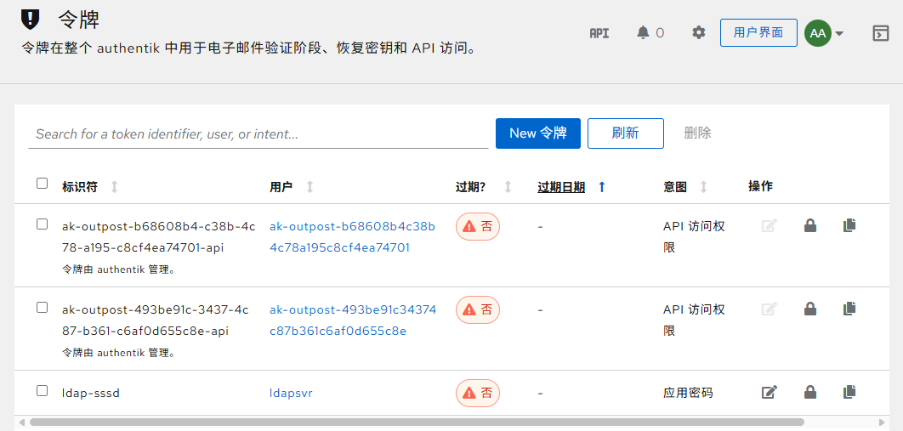
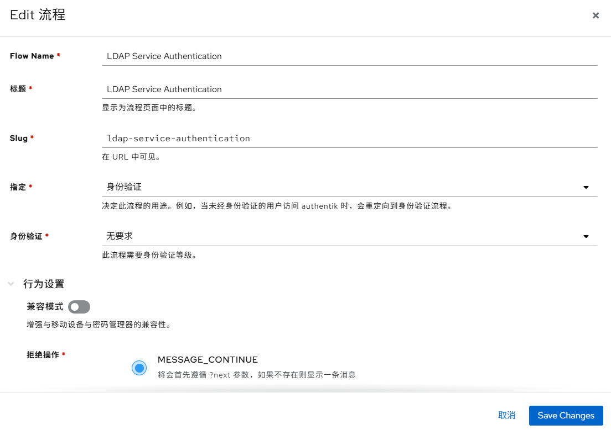
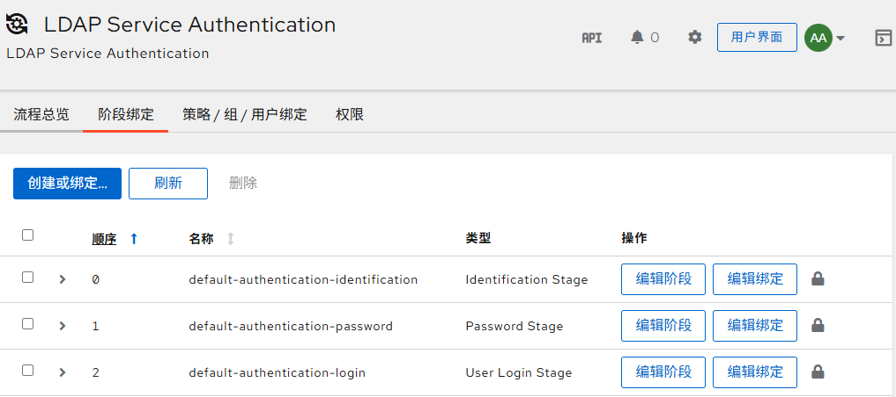
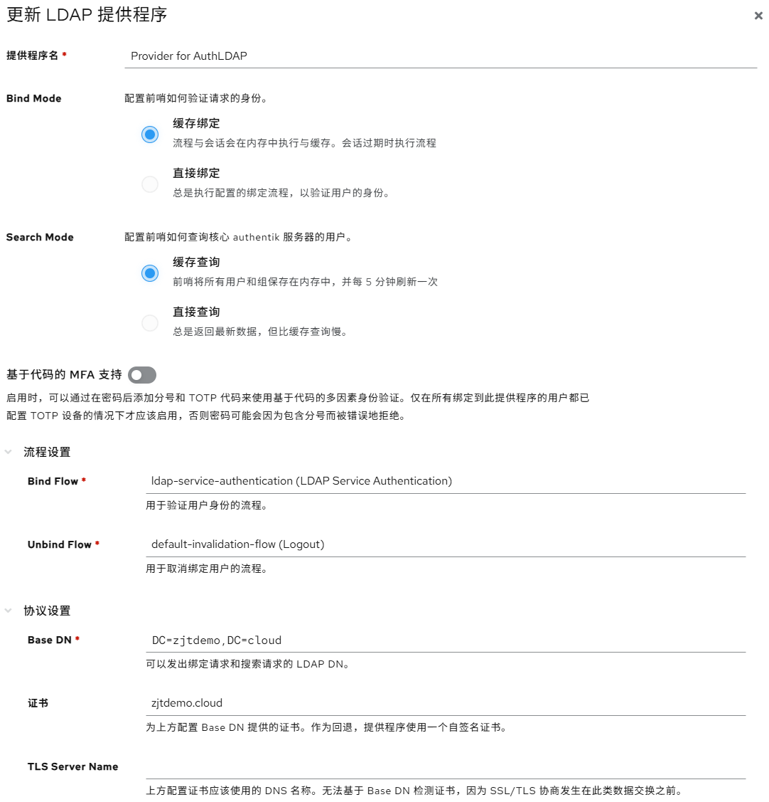
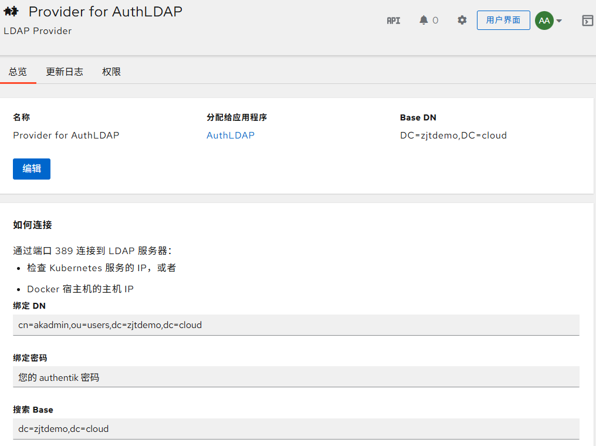
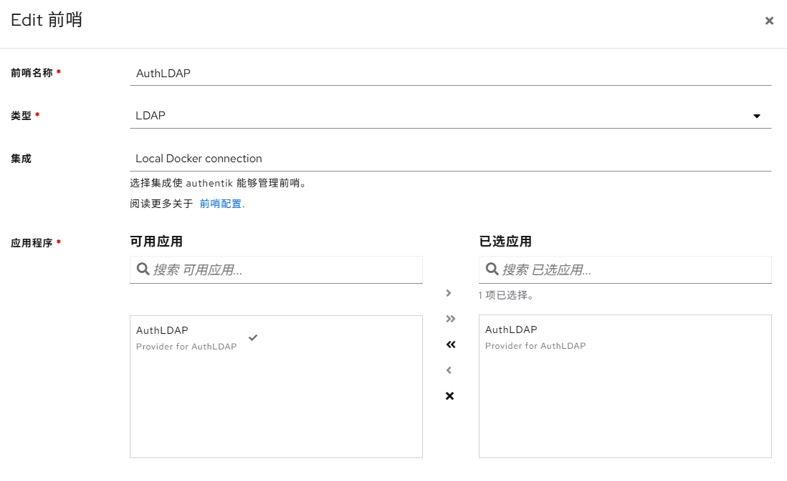
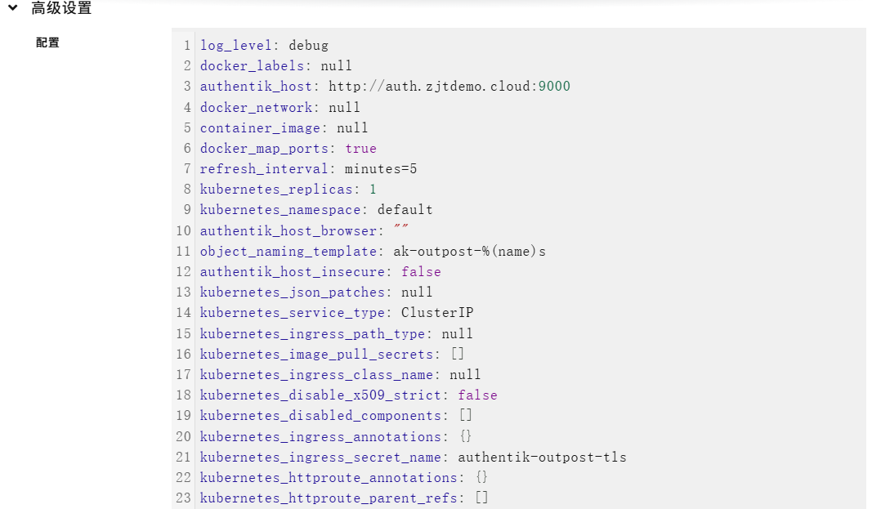
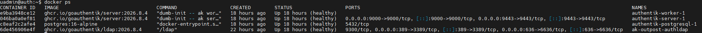
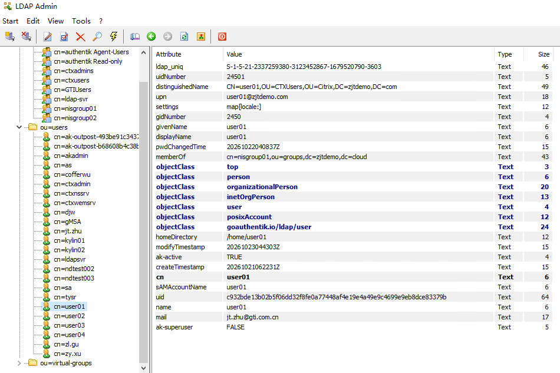

概述
Authentik 的 LDAP outpost 可以把 Web 侧的用户目录以标准 LDAP / LDAPS 协议暴露给 Linux 主机，让 sssd 等传统 PAM 组件复用同一套账号体系。本文记录从服务账号、认证流到 Linux 接入的完整配置，并附上排障命令与已知限制。
说明：文中示例域名
zjtdemo.cloud、内网 IP192.168.3.26为测试环境值，实际部署请替换。
一、准备服务账号
创建一个专用账号 ldapsvr 作为 LDAP 绑定账号。该账号不应启用 MFA——Linux 侧的 bind 请求无法完成二次验证。
接着为该账号创建「用户应用程序密码」：通过 HTTPS 访问平台后复制该密码，用于后续 sssd 配置中的 ldap_default_authtok。应用程序密码与登录密码不同，泄漏后可在用户设置中单独吊销。

二、创建独立的认证 Flow
LDAP bind 需要一个不含 MFA 阶段的认证流程：
- 复制
default-authentication-flow，创建一个独立 Flow。 - 进入 Stage Bindings，删除或禁用 MFA 相关阶段，只保留密码验证。
- 保存后记下 Flow 的标识，供 Provider 引用。
这一步是核心：如果复用带 MFA 的默认 Flow，Linux 登录会在 bind 阶段卡住，因为命令行没有输入验证码的交互界面。


三、创建 LDAP 应用与 Provider
在 Applications 中创建应用，然后创建 Provider：
- Provider 类型选择 LDAP。
- 绑定上一步创建的无 MFA 认证 Flow。
- 用户搜索基数按目录结构调整（示例：
ou=users,dc=zjtdemo,dc=cloud）。


四、创建 Outpost
在 Outposts 中新建，选择 Docker 集成，authentik 会自动生成 ak-outpost-authldap 容器并绑定应用。
修改高级设置：
authentik_host：改成实际的 server 地址（示例http://server:9000），不要保留默认的/。- 确认 outpost 与 server 处于同一个 Docker 网络，否则无法通过容器名回连。



五、Linux 侧 sssd 配置
安装 sssd 与 LDAP 工具后，写入 /etc/sssd/sssd.conf：
[sssd]
domains = zjtdemo.cloud
services = nss, pam
[domain/zjtdemo.cloud]
id_provider = ldap
auth_provider = ldap
ldap_uri = ldaps://auth.zjtdemo.cloud:636
ldap_tls_cacert = /etc/pki/ca-trust/source/anchors/ZJTDC_CA.cer
ldap_tls_reqcert = demand
ldap_opt_timeout = 30
ldap_user_search_base = ou=users,dc=zjtdemo,dc=cloud
ldap_group_search_base = dc=zjtdemo,dc=cloud
ldap_default_bind_dn = cn=ldapsvr,ou=users,dc=zjtdemo,dc=cloud
ldap_default_authtok = <应用程序密码>
ldap_user_name = cn
default_shell = /bin/bash
ldap_id_mapping = false
fallback_homedir = /home/%u
配置要点：
ldap_tls_reqcert = demand强制校验证书链，需先把签发 CA 放到 anchors 目录并执行update-ca-trust。ldap_id_mapping = false表示直接使用目录中的uidNumber/gidNumber，前提是所有用户都已分配这两个属性。default_shell必须显式指定，因为 authentik 不提供loginShell属性。- 修改配置后执行
chmod 600 /etc/sssd/sssd.conf，再systemctl restart sssd。
六、排障
Outpost 配置变更后先重启容器：
docker restart ak-outpost-authldap
1. 纯 bind 测试（不含搜索）
ldapwhoami -x -H ldap://192.168.3.26:389 \
-D "cn=ldapsvr,ou=users,dc=zjtdemo,dc=cloud" -W
返回 dn:cn=ldapsvr,... 即表示账号密码与 Flow 正常。
2. 目录搜索（必须显式列属性）
ldapsearch -x -H ldap://192.168.3.26:389 \
-D "cn=ldapsvr,ou=users,dc=zjtdemo,dc=cloud" -W \
-b "ou=users,dc=zjtdemo,dc=cloud" "(objectClass=*)" \
cn uidNumber gidNumber homeDirectory objectClass
3. LDAPS 与证书链校验
openssl s_client -connect auth.zjtdemo.cloud:636 < /dev/null | grep "Verify return"
期望输出 Verify return code: 0 (ok)。若非 0，检查 CA 证书与服务器名称是否匹配。

七、已知限制
- 不提供
loginShell属性，必须在 sssd 中显式配置default_shell。 - 不提供 sudo 规则、automount、netgroups、Kerberos 等 NSS 信息。
- 不支持 LDAP Password Modify 扩展，修改密码需走 Web 后台。
- Linux 登录只校验密码（走无 MFA 的 bind flow），MFA 仅覆盖 Web 侧访问。
本文由 WorkBuddy AI 编辑整理。